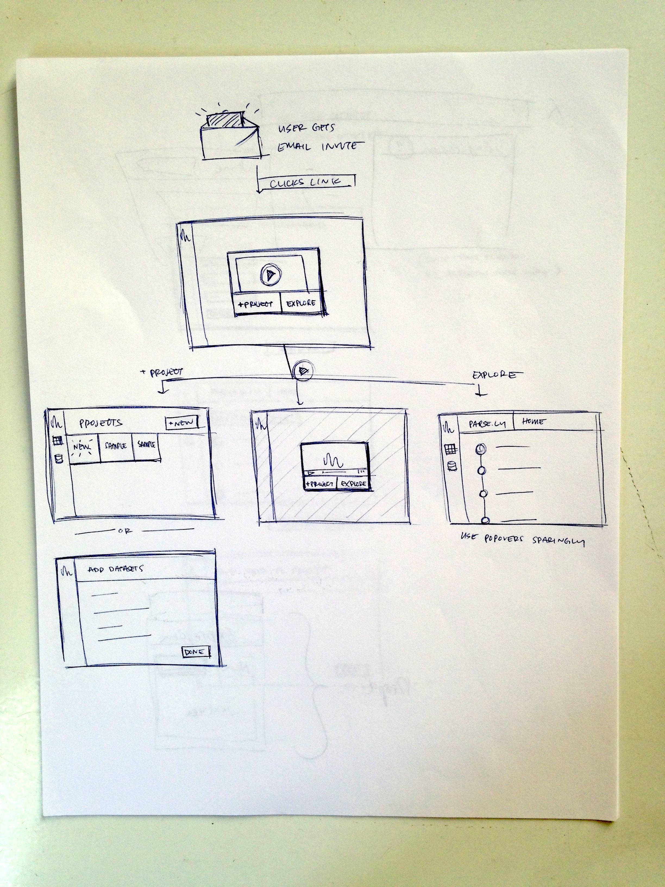
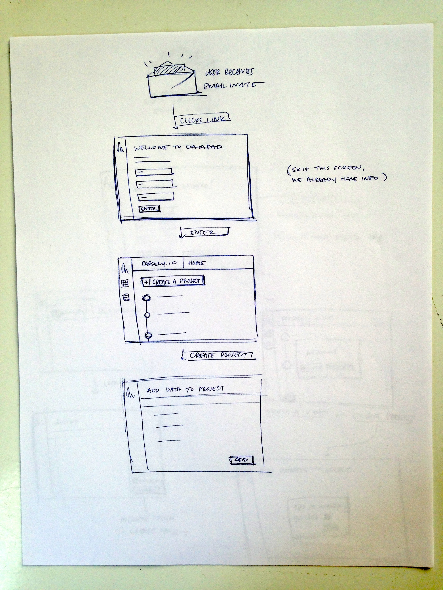
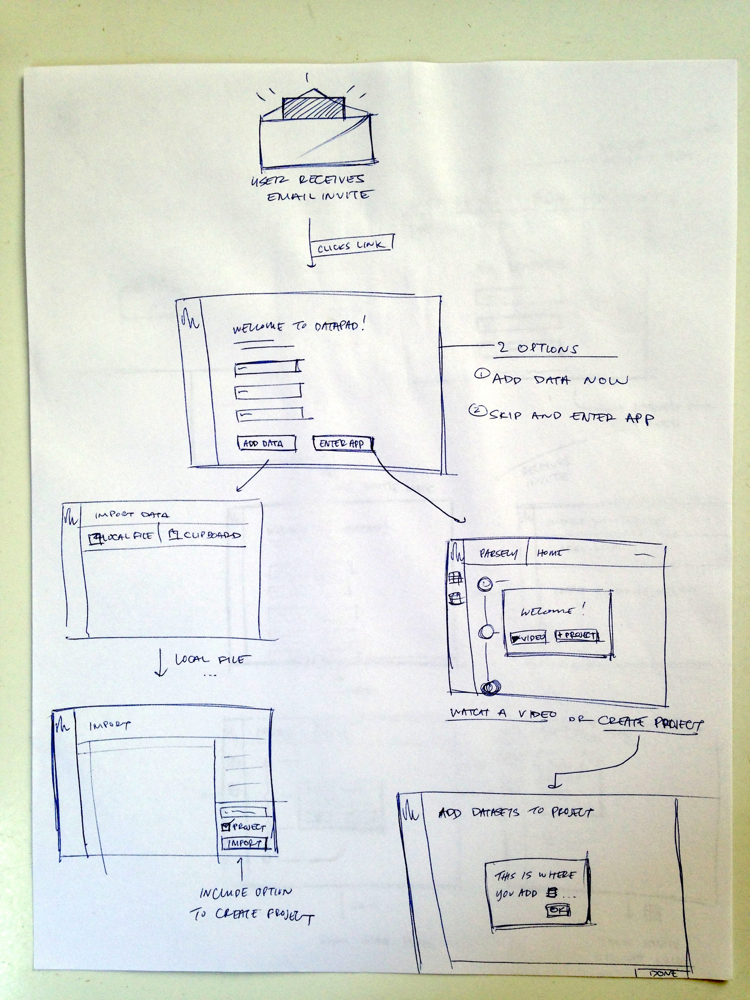
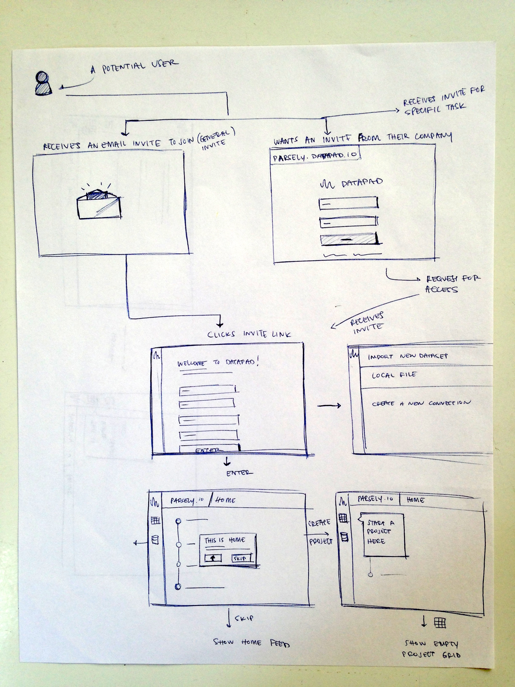

DataPad, a web app designed for teams to integrate, refine, analyze, explore, and share data.
Design was tasked to create an onboarding process to help new users get started with DataPad. We had some key goals:
- Help users get to the most valuable parts of the app in less than 4 minutes.
- Allow secondary users to quickly connect and share data.
- Allow users to set up their company and invite others.
- Allow users to watch a brief video at some point to learn more about how to use DataPad.
Role
Designer
Project
DataPad
Timeline
October 2013 - October 2014
DataPad's charting tool aimed to be expressive, predictable, and explicit.
Process
There was a process. I looked at onboarding designs from a variety of web products, compared, and contrasted the strengths and weaknesses of each.
TUMBLR - Uses dotted placeholder containers to indicate future content - Focuses first on getting you to follow five blogs - Allows you to skip the suggested "follow five" - Uses spotlighting to focus on the next thing - Immediately lets you sign in after signup (email confirmation is still sent) - Pushes mobile app (with option to opt out) before letting user explore - Puts user into app to start onboarding - Prompts for avatar
TRELLO - Immediately lets you sign in after signup (email confirmation is still sent) - The content is the tutorial - Uses Trello as a member so the activity stream is repopulated. - Uses the product as a to-do list for the user - Puts user into app to start onboarding - Uses gravatar
QUORA - "Emerald City in the distance" shows the landing UI behind the onboarding modal - Uses unambiguous commands + associated benefits - Once on boarded after signing up, choosing topics, adding friends, shows to-do list on the right with already-completed items - Fails to fist bump user for finishing to-do items - Uses a separate modal for first onboarding steps, then uses the app to teach user
INVISION - Uses a modal on top of app UI to onboard users - Gives sample screens in case user has no screens handy - Includes sample projects - Preloads activity screen so there's no "There's nothing here" - Uses one-time tooltip helpers to point out options in project view - Drops you right into a project (demo or your own) right after onboarding - Uses default avatars (gravatar)
BASECAMP - Uses a full screen as the first view before dropping into the app - Provides a sample project - Shows placeholder objects for where projects will show up - Uses default avatars
MURALLY - On entrance, very focused action to get started with a new mural - Sample murals are provided in the sidebar - A video modal shows up on the first mural creation, with option to close - Progress indicator is shown for a to-do list http://d.pr/i/cPlu - Each item in the to-do list when clicked, spotlights the action http://d.pr/i/fOa7
Sketches
   Flows